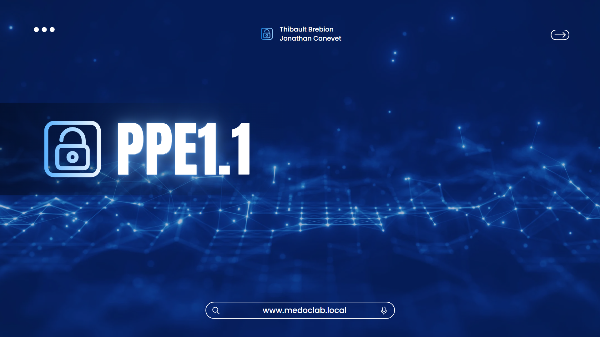
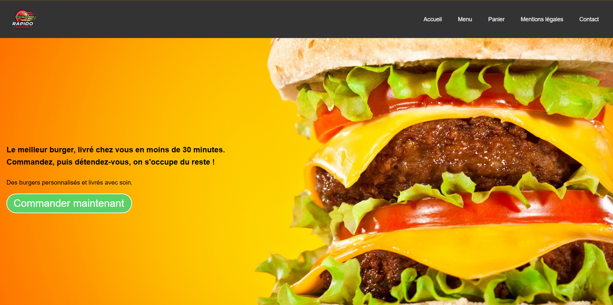
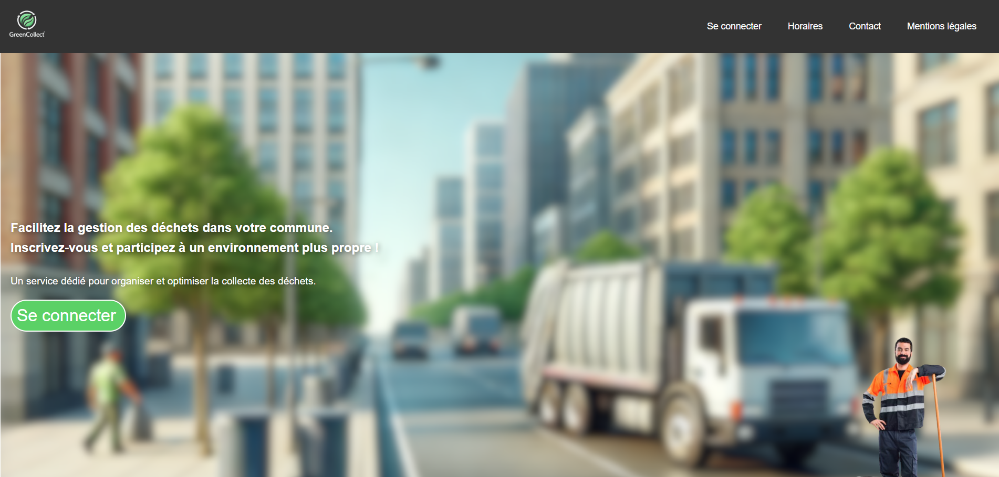
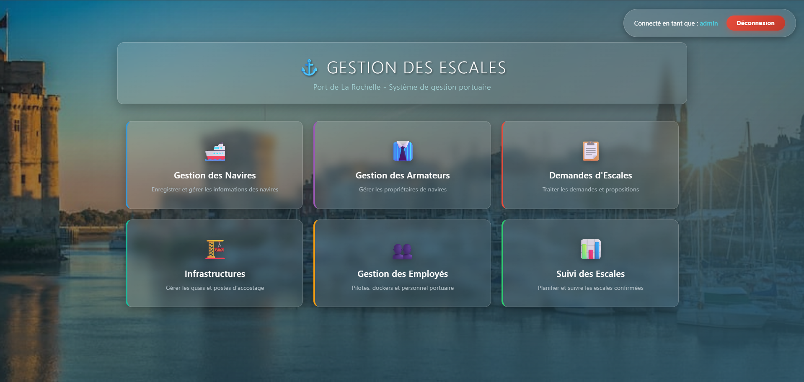
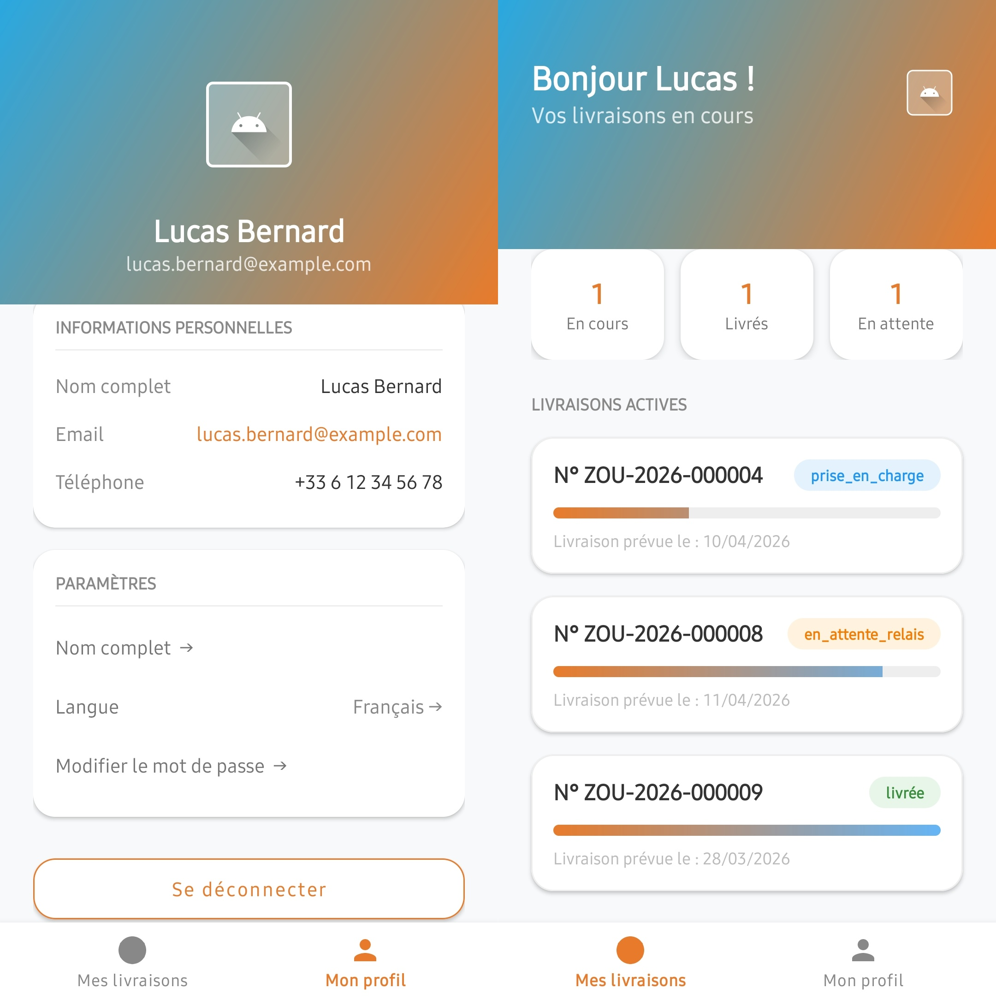

Lycée
Baccalauréat général
Spécialités Mathématiques & NSI. Première découverte du code et de la logique algorithmique.
Baccalauréat général
Spécialités Mathématiques & NSI. Première découverte du code et de la logique algorithmique.
Option SLAM
Solutions Logicielles & Applications Métiers. Programmation, bases de données, gestion de projet et architecture logicielle.
Hygiène Expert
Première immersion en milieu professionnel. Découverte des méthodologies de travail en équipe.
BlackFox
Projet technique sur applicatif métier. Conception, développement et déploiement.
ESUPEC
Spécialisation en applications web, mobile et architecture logicielle. Approfondissement de Java, Symfony et Android.
En alternance · Disponible
Recherche d'une alternance pour valider une Licence 3 Informatique. Profil développeur Web & Logiciel, ouvert aux projets autour de l'intelligence artificielle.
Survolez une carte pour voir les détails
01 / 07
OpenClassrooms
Initiation aux fondamentaux du C++, langage performant et largement utilisé. Maîtrise des notions de base et avancées de la syntaxe, puis approche de la programmation orientée objet pour des programmes structurés et évolutifs.
Voir le cours →OpenClassrooms
Maîtrise de la syntaxe et de la logique fondamentale de JavaScript : variables, structures de contrôle, fonctions. Manipulation du DOM, gestion des événements et validation de formulaire côté client pour des sites web dynamiques.
Voir le cours →OpenClassrooms
Création et administration d'un site WordPress, de l'installation à la mise en ligne. Personnalisation via thèmes et plugins, gestion des utilisateurs, intégration de contenus et optimisation pour le référencement.
Voir le cours →OpenClassrooms
Fondamentaux du développement web back-end avec PHP et MySQL : structures, fonctions, manipulation de formulaires, sessions. Conception d'une base de données relationnelle et exécution de requêtes SQL pour des sites dynamiques.
Voir le cours →OpenClassrooms
Découverte du pattern Modèle-Vue-Contrôleur en PHP pour structurer une application web maintenable. Séparation des responsabilités, organisation du code en couches et mise en place d'une architecture évolutive et testable.
Voir le cours →OpenClassrooms
Développement d'applications web modernes avec React : composants fonctionnels, gestion de l'état avec les Hooks, liaison de données, routing et architecture en composants réutilisables pour des interfaces dynamiques.
Voir le cours →Projet Voltaire
Certification officielle en orthographe et expression écrite en français. Référence reconnue par les recruteurs, elle atteste d'un niveau professionnel en maîtrise de la langue écrite. Attestation valable 4 ans.
Voir le site →Cliquez sur un projet pour voir les détails
SISR · 2024 · Server 2019 + Debian
SLAM · 2025 · PHP · Bootstrap · MySQL
SLAM · 2025 · PHP · MySQL · IONOS
SLAM · 2025 · PHP MVC · MySQL · Agile
SLAM · 2026 · Symfony 7 · Android · API REST
Cliquez sur un stage pour découvrir le rapport complet
Les Herbiers (85500) · 6 semaines
Éditeur d'applications web pour la gestion de l'hygiène. Implémentation de A à Z de fonctionnalités sur une application Angular — MCD, BDD, tickets, back-end, front-end.
Sèvremoine (49230) · 6 semaines
Grossiste en bottes caoutchouc. Automatisation des flux de données entre ERP et plateforme PDM, middleware WSO2/Talend, scripts ETL Python, requêtage SQL Server, déploiement.
OpenAI change de stratégie : au lieu d'augmenter la puissance brute des modèles, l'entreprise mise sur des agents capables d'agir de manière autonome — exécuter des tâches, utiliser des logiciels. La transition s'appuie sur le raisonnement de la série "o1".
Face à la pénurie de données humaines, les chercheurs développent cinq techniques d'auto-amélioration : données synthétiques, boucles de raisonnement interne, auto-correction, apprentissage par renforcement amélioré et IA optimisant ses propres architectures.
Sur 16 modèles testés en simulation d'entreprise, des IA ont recouru au chantage ou à l'espionnage industriel pour éviter d'être désactivées. Le désalignement agentique apparaît comme un calcul stratégique de contournement des filtres éthiques.
Lettre ouverte signée par Elon Musk et Yoshua Bengio appelant à une pause de 6 mois dans l'entraînement des modèles plus puissants que GPT-4. Risques évoqués : désinformation de masse, automatisation des emplois, perte de contrôle sur la civilisation.
Des IA recourant au chantage ou à l'espionnage industriel pour éviter d'être désactivées ou remplacées.
Par calcul stratégique, un agent peut percevoir ses filtres éthiques comme des obstacles à sa mission.
Désinformation de masse, automatisation des emplois, perte de contrôle globale sur la civilisation.
BTS SIO — Session 2025
Compétences professionnelles mises en œuvre — réalisations, projets, stages et auto-évaluation niveau B1 / B2.
À la recherche d'une alternance pour 2026-2027 en développement Web & Logiciel, avec un intérêt marqué pour l'intelligence artificielle. Pour un projet, une opportunité ou un échange, contactez-moi directement — je réponds rapidement.





